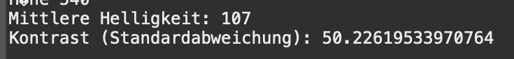
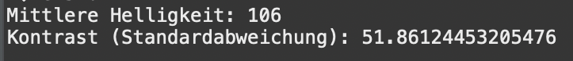

a. RGB ist der gebräuchlichste Farbraum bei der Aufzeichnung und Darstellung von Bildern. Hier wird das
Lichtspektrum in seine Rot-, Grün- und Blauanteile aufgespalten.
Der YCbCr Farbraum hingegen besteht aus
der Luminanz Y (Helligkeit) und den Farbanteilen (Chrominanz) Cb und Cr.
Die RGB Farben eines Bildes
lassen sich also in den YCbCr Farbraum transformieren.
Für viele Anwendungen, z.B. die Bildkompression,
ist es günstig, Helligkeits- und Farbinformation getrennt zu verarbeiten.
Nenne den physiologischen Grund
dafür!
Originalsbilder 1/2:
Das menschliche Auge ist empfindlicher für Helligkeitsunterschiede (Luminanz) als für Farbunterschiede (Chrominanz), da die Netzhaut mehr lichtempfindliche Stäbchen (für Helligkeit) als farbempfindliche Zapfen besitzt. Helligkeit liefert den Großteil der Details, während Farben weniger präzise wahrgenommen werden. Diese Eigenschaft erlaubt es, bei Anwendungen wie Bildkompression (z. B. JPEG), die Farbinformation stärker zu reduzieren, während die Helligkeitsinformationen nahezu unverändert bleiben,um die Bildqualität zu erhalten.
b. Erstelle aus deinen eigenen Bildern Versionen, die nur jeweils den Rot-, Grün- und Blauanteil zeigen. (Hinweis: Dazu müssen einfach die jeweils anderen Farbwerteauf null gesetzt werden).
Rot:
Grün:

Blau:

c. Nun transformiere deine RGB-Bilder nach YCbCr. Lese dafür jedes Pixel ein und berechne die Helligkeit Y (Luminanzformel!)sowie die Chrominanzen Cb und Cr (Chrominanzformeln!) aus den RGB Werten.
Y:
Cb:
Cr:
d. Wandle zunächst zur Rekonstruktion deines Bildes die YCbCr Werte zurück in RGB.
YCbCr zu RGB:

Mithilfe eines Histogramms kann die Verteilung (Häufigkeit) der Helligkeiten eines Bildes dargestellt
werden.
Erstelle ein Histogramm für das monochrome Nature-Bild aus Aufgabe 1 (Y - Bild).
Lese dafür
den Helligkeitswert der Pixel ein und bestimme die Helligkeitshäufigkeiten (Anzahl gleicher Helligkeiten).
Diese sollen in eine Textdatei geschrieben und als Histogramm dargestellt werden (z.B. in Excel, Java).
Ins Übungsprotokoll: Sourcecode, Histogramm des Bildes
Berechne die mittlere Helligkeit des monochromen Detailbildes aus Aufgabe 1 (Y - Bild).
Lese dafür den
Helligkeitswert der Pixel ein. Die mittlere Helligkeit ist die Summe aller Helligkeitswerte geteilt durch die
Anzahl der Bildpunkte.
Berechne auch den Kontrast des Bildes, d.h. die Standardabweichung der Helligkeit.
NatureY Bild:

ManmadeY Bild:

Verändere das monochrome Bild in der Helligkeit durch Subtrahieren der Werte h=(-20, -40, -60, -80)
bzw. Addieren der Werte h=(20, 40, 60, 80).
Beachte dabei, dass ihr beim Ergebnis der Pixelwert-
berechnung im 8-Bit-Bereich bleibt.
Berechne die Histogramme des hellsten und dunkelsten Bildes.
Erhöhe bzw. verringere den Kontrast durch Multiplikation mit den Faktoren k=(0.2, 0.4, 0.8, 1.0) sowie
k=(1.5, 2.5, 5.0, 10.0).
Was würde bei einer Kontraständerung mit k größer 0 passieren (Einfach ausprobieren
und Bild speichern!)?
Berechne auch hier das Histogramm des kontrastärmsten und kontrastreichsten Bildes und vergleiche mit
denen der Helligkeitsänderung.
Was haben Helligkeits- und Kontraständerung für eine Auswirkung auf das
Histogramm (Vergleiche auch mit dem Histogramm aus Aufgabe 2)?
Ins Übungsprotokoll: Sourcecode, Ergebnisse für mittlere Helligkeit und Kontrast, Ergebnisse
Minimum/Maximum für Helligkeit und Kontrast mit dazugehörigen Histogrammen, Alle Bilder